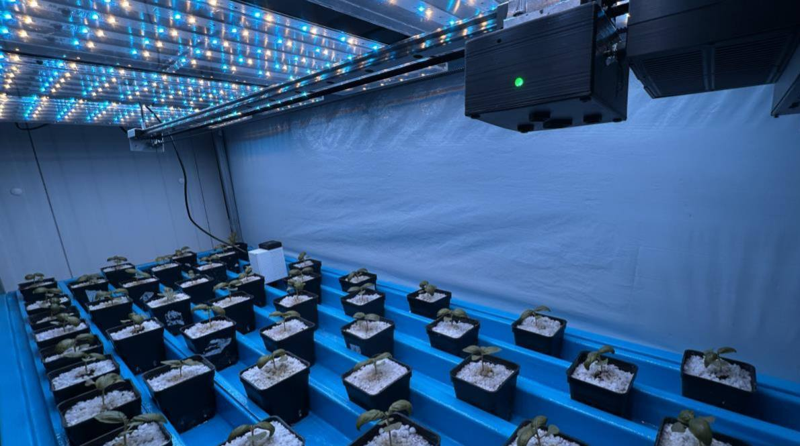
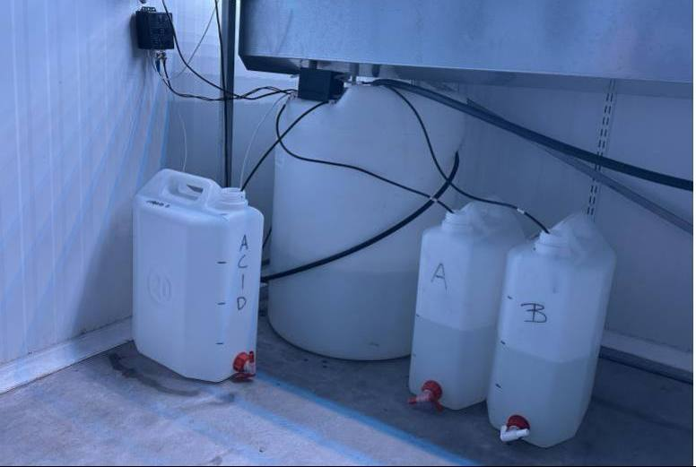
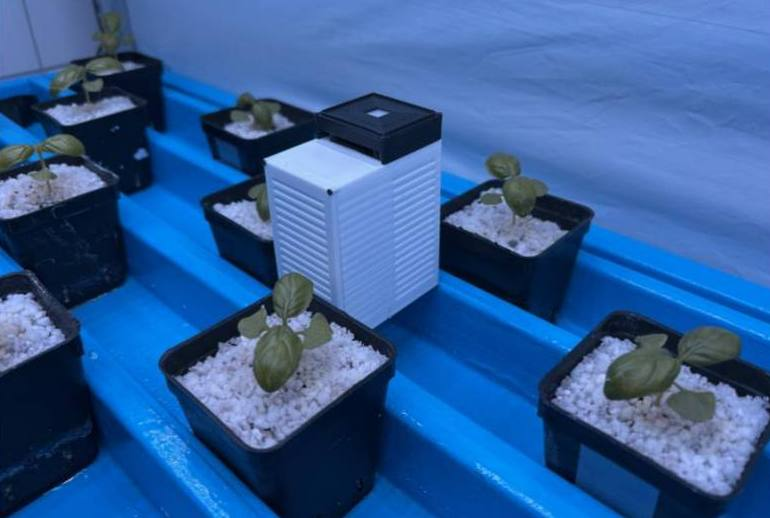
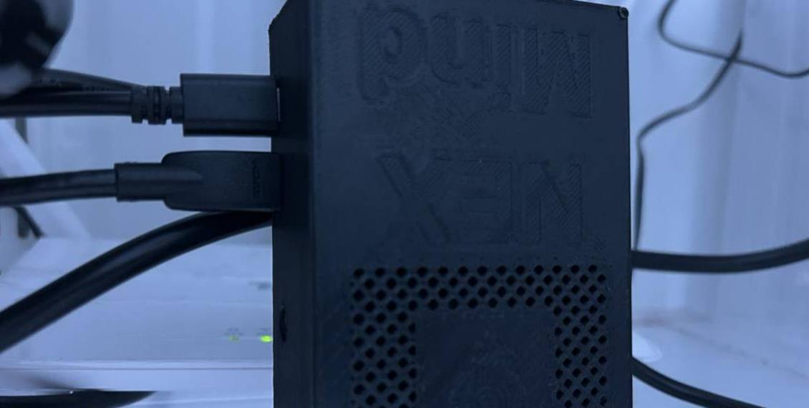

Fertilizzazione
Prepara e corregge la soluzione nutritiva in base allo stadio della coltura, dosando concentrati e correttori di pH.
- Controlla
- EC, pH, dosaggi
Neura GrowTech sviluppa NEX, un sistema hardware e software per serre, fuori suolo e vertical farm. NEX osserva la coltura, riconosce specie e stadio di crescita e regola da solo nutrizione, irrigazione e clima, in tempo reale.
Nato dalla ricerca del DISTAL, Università di BolognaStadio vegetativo avanzato: EC obiettivo 1.8 mS/cm, pH 5.8–6.0. VPD sopra soglia, aumentare umidità.



Fertirrigazione, irrigazione e clima vengono ancora gestiti in gran parte a esperienza, o con sistemi che si fermano al monitoraggio. I software di supporto alle decisioni suggeriscono, ma poi qualcuno deve intervenire a mano.
Con i costi di fertilizzanti ed energia in crescita e meno personale specializzato disponibile, ogni correzione fatta in ritardo pesa su resa e margini.
NEX unisce osservazione, analisi e controllo in un unico sistema. Il ciclo si ripete in continuo e si adatta a ciò che la pianta richiede in quel momento.
Telecamere e sensori misurano in continuo lo stato della coltura, della soluzione nutritiva e dell'aria.
Il nucleo cognitivo riconosce specie e stadio fenologico e calcola la strategia adatta, come una diagnosi agronomica personalizzata.
NEX comanda direttamente pompe, valvole e impianti di climatizzazione. Nessun passaggio manuale tra il dato e l'intervento.
↻ Poi il ciclo ricomincia, verificando l'effetto dell'intervento.
Si parte dal processo che pesa di più sui costi e si aggiungono gli altri moduli quando serve. Tutti condividono gli stessi dati e la stessa intelligenza.
Prepara e corregge la soluzione nutritiva in base allo stadio della coltura, dosando concentrati e correttori di pH.
Decide quando e quanto irrigare a partire dal fabbisogno reale delle piante, non da un timer fisso.
Mantiene il microclima nella finestra ottimale per la coltura, agendo su ventilazione, umidificazione e temperatura.
NEX è progettato per il retrofit: si collega alle infrastrutture esistenti, senza rifare la serra e senza cambiare il modo di coltivare.
di input produttivi: acqua, fertilizzanti ed energia.
di produttività, con rese più stabili tra un ciclo e l'altro.
di interventi manuali in meno nella gestione quotidiana.
Stime basate sulle sperimentazioni condotte in ambiente operativo. I risultati variano in base a coltura e impianto.
Aziende ad alta intensità produttiva, dove ogni punto di efficienza su nutrizione, acqua ed energia si vede a fine anno. NEX riduce i costi operativi e la dipendenza da competenze specialistiche sempre presenti.
Protocolli standardizzati, meno variabilità operativa tra le prove e dati strutturati di alta qualità. Un'infrastruttura su cui costruire sperimentazioni ripetibili.

Qui raccogliamo le sperimentazioni e le validazioni di NEX: dove, su quale coltura, con quali moduli e con quali risultati misurati.
Coltura fuori suolo su bancali sotto luce LED, con NEX che gestisce la soluzione nutritiva e il microclima, riconoscendo lo stadio delle piante dalle immagini.
Le prime installazioni presso aziende agricole e centri di ricerca. Ogni progetto pilota avrà qui la sua scheda con i risultati misurati.
Candida la tua serraAssegnista di ricerca al DISTAL. Direzione strategica e coordinamento.
Dottorando di ricerca. Sviluppo tecnologico e modelli decisionali.
Ingegnere con esperienza industriale. Operazioni e industrializzazione.
Tecnico al DISTAL. Sviluppo commerciale e rapporti con i clienti.
Francesco Orsini, Giorgio Gianquinto Prosdocimi e Giuseppina Pennisi, del Dipartimento di Scienze e Tecnologie Agro-Alimentari dell'Università di Bologna, esperti di fisiologia delle colture e sistemi di coltivazione innovativi.
Stiamo selezionando le prime aziende e i primi centri di ricerca con cui installare NEX. Raccontaci che cosa coltivi e com'è fatto il tuo impianto: valutiamo insieme da quale modulo partire.